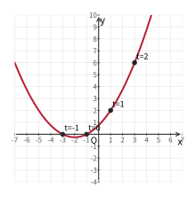
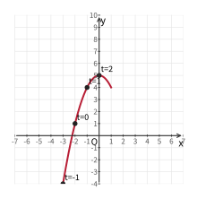
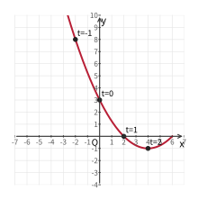

ホーム ＞ 数学C ＞ 媒介変数表示・極座標
別冊練習問題 1 の解答 媒介変数表示の曲線（消去）
(1) 媒介変数 \(t\) で表された曲線 \(x=2 t - 1,\ y=t^{2} + t\) を、\(x,\ y\) の方程式で表せ。
\(t\) を \(x\) で表す
\[x=2 t - 1\ \Rightarrow\ t=\dfrac{x}{2} + \dfrac{1}{2}\]\(y\) に代入する
\[y=t^{2} + t=\dfrac{x}{2} + \left(\dfrac{x}{2} + \dfrac{1}{2}\right)^{2} + \dfrac{1}{2}\]展開して整理する
\[y=\dfrac{x^{2}}{4} + x + \dfrac{3}{4}\]\(t\) はすべての実数をとり \(x\) もすべての実数をとるので、放物線全体になる。

【答案】
\[y=\dfrac{x^{2}}{4} + x + \dfrac{3}{4}\]答
(2) 媒介変数 \(t\) で表された曲線 \(x=t - 2,\ y=- t^{2} + 4 t + 1\) を、\(x,\ y\) の方程式で表せ。
\(t\) を \(x\) で表す
\[x=t - 2\ \Rightarrow\ t=x + 2\]\(y\) に代入する
\[y=- t^{2} + 4 t + 1=4 x - \left(x + 2\right)^{2} + 9\]展開して整理する
\[y=- x^{2} + 5\]\(t\) はすべての実数をとり \(x\) もすべての実数をとるので、放物線全体になる。

【答案】
\[y=- x^{2} + 5\]答
(3) 媒介変数 \(t\) で表された曲線 \(x=2 t,\ y=t^{2} - 4 t + 3\) を、\(x,\ y\) の方程式で表せ。
\(t\) を \(x\) で表す
\[x=2 t\ \Rightarrow\ t=\dfrac{x}{2}\]\(y\) に代入する
\[y=t^{2} - 4 t + 3=\dfrac{x^{2}}{4} - 2 x + 3\]展開して整理する
\[y=\dfrac{x^{2}}{4} - 2 x + 3\]\(t\) はすべての実数をとり \(x\) もすべての実数をとるので、放物線全体になる。

【答案】
\[y=\dfrac{x^{2}}{4} - 2 x + 3\]答